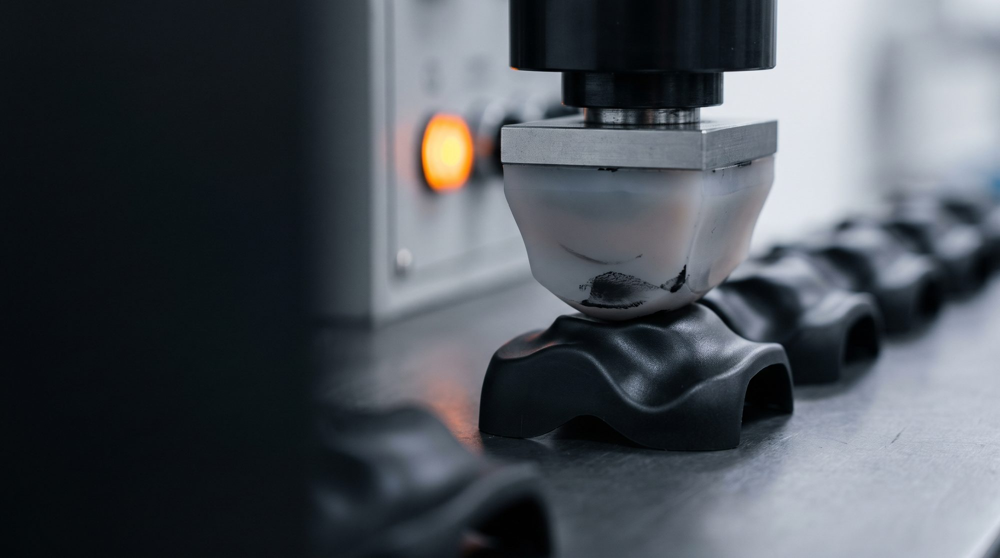
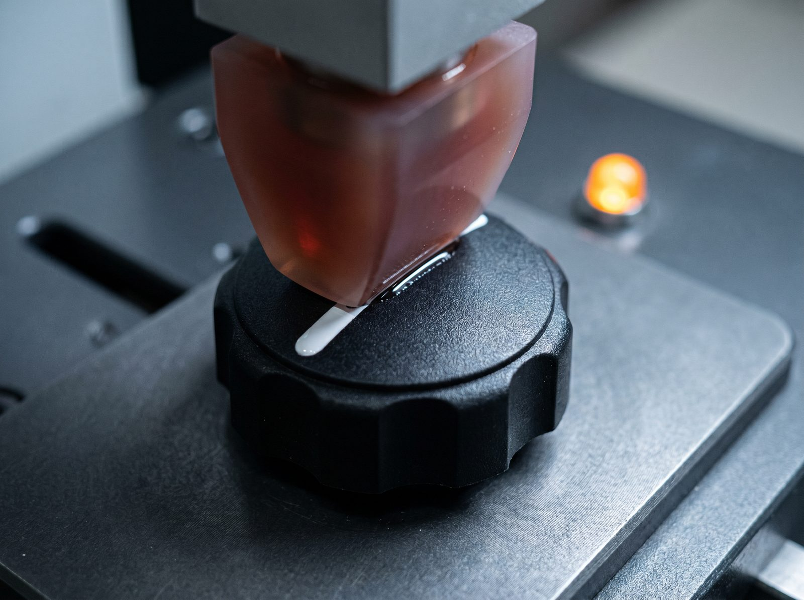
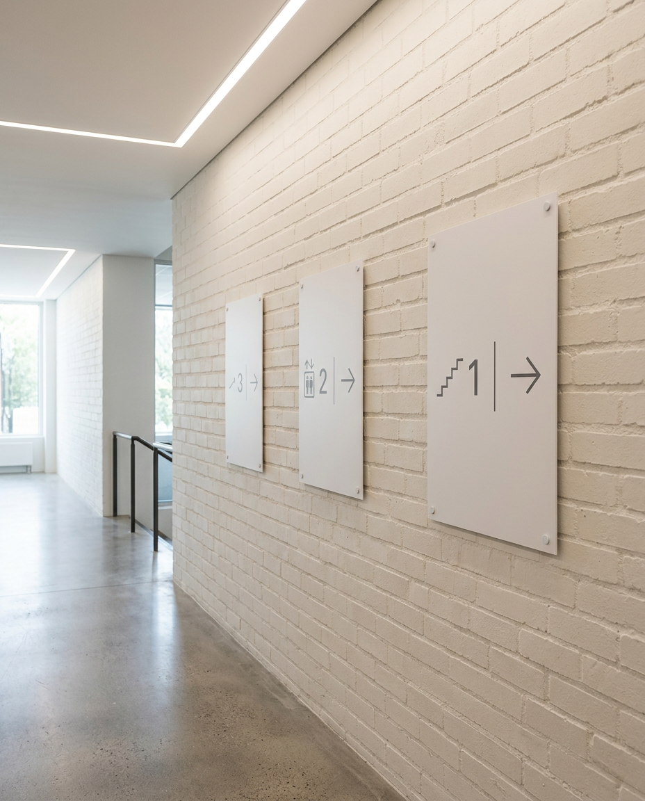
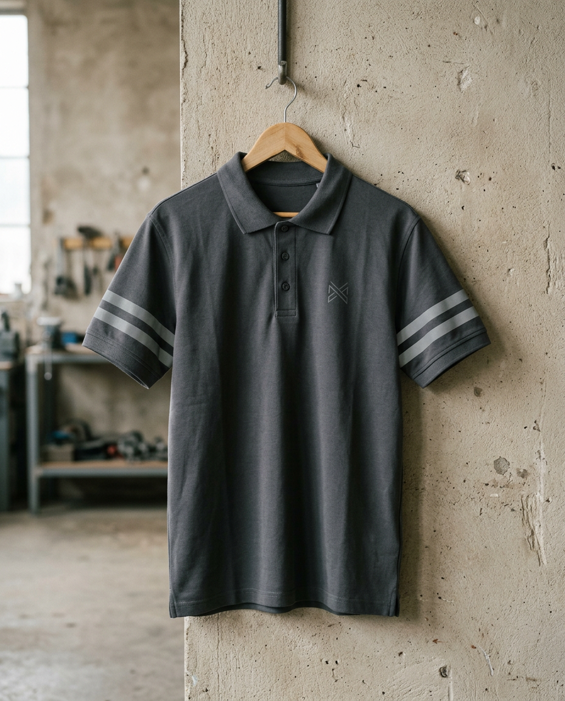
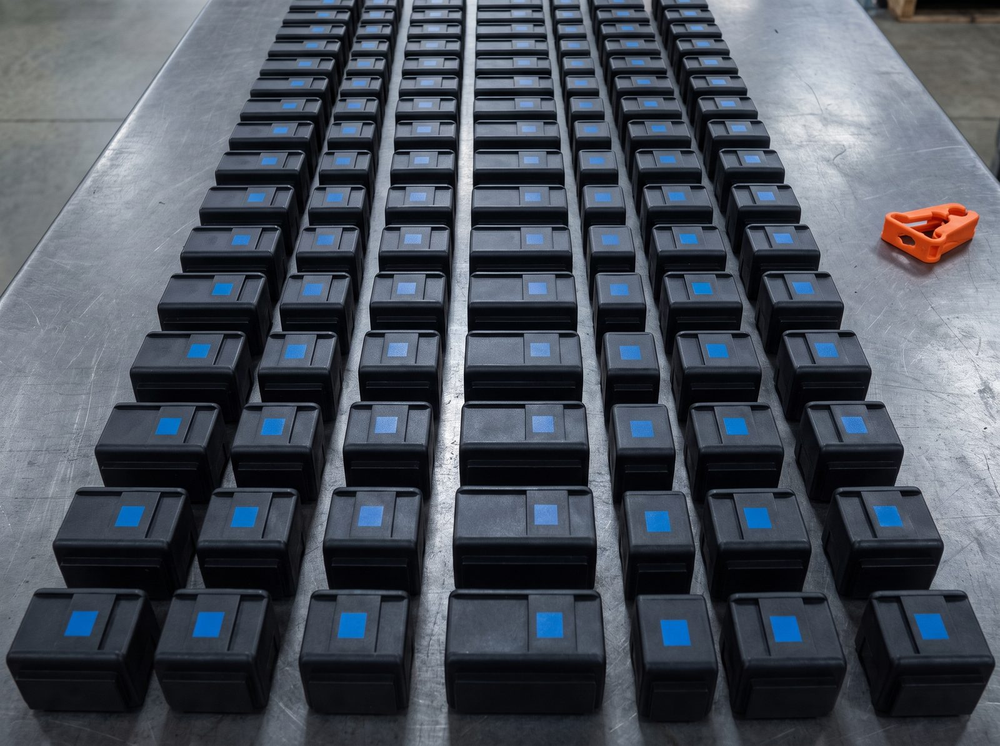

Piezas y componentes · producción
Marcamos la pieza que nadie más sabe marcar
Tampografía sobre geometrías imposibles: mandos, carcasas, instrumental. Marca permanente y repetible, serie tras serie.
Elige por lo que necesitas conseguir, no por el nombre de la máquina.

Marca permanente sobre cualquier geometría. La pieza 1 y la 10.000, idénticas.
Ver soluciónSerie, lote y código que no se borran.
PedirTu marca en el envase, sin etiquetas.
Pedir
Permanente y conforme a norma.
Pedir
Aguanta el lavado industrial.
Pedir
12 técnicas, un interlocutor, una factura.
ConsolidarDinos sobre qué superficie hay que marcar y para qué. Partimos de tu material para orientarte hacia la técnica correcta entre las 12 y pasar a la solicitud de presupuesto.
Empezar por mi superficieVista previa de mockup: el asistente guiado por superficie y objetivo llega en la versión completa. La recomendación es orientativa; la técnica final se confirma con tu brief, material y proceso.
Estas son las 12, numeradas y cada una bajo su superficie principal. No clasificamos por máquina, sino por tu pieza. Muchas técnicas sirven también para otros materiales: lo confirmamos con tu brief.
El tapón o dosificador del envase se marca con tampografía (técnica 04).
El color sobre metacrilato rígido va con impresión UVI (técnica 05).
Serie mínima, plazo y aguante por técnica se confirman según tu material y proceso. Series desde unidades hasta grandes tiradas — consultar disponibilidad. Estimación orientativa, sujeta a brief.
Cada técnica, en movimiento: tampografía sobre pieza, grabado láser, serigrafía cilíndrica sobre envase y fresado de metacrilato.
Imágenes de proceso del taller · vídeo sin sonido.
Archivamos la ficha de proceso de cada trabajo —técnica, tinta, fotolito o cliché, parámetros— para que la reposición de dentro de tres años sea exactamente igual. Más de 30 años de oficio significan que el proveedor sigue ahí cuando vuelves a pedir.
Definimos pieza, material, técnica y validamos el resultado contigo.
Documentamos parámetros, tinta, cliché o fotolito y referencia de color.
Producimos la tirada con control de proceso, pieza a pieza igual.
Recuperamos la ficha archivada y repetimos el pedido sin desviación.
El comprador industrial no compra una vez: repone. Que la pieza número 1 y la 10.000 —y la del año que viene— salgan idénticas es lo que reduce su riesgo y por lo que vuelve.
Hablar con un técnicoSolo declaramos lo verificable. Sin sellos que no tengamos: gestión ambiental real y proceso documentado son señales de una empresa que estará aquí dentro de años.
El agua del proceso se trata y reutiliza en circuito cerrado, sin vertido directo. Una decisión de empresa a largo plazo, no un eslogan.
Gestión de papel, cartón y plástico a través del partner de reciclaje RECICLAMAS, y residuos peligrosos vía gestor autorizado.
Cada trabajo deja su ficha documentada: la base de la reposición idéntica y de la trazabilidad de tu propio pedido.
No publicamos sellos que no tengamos. Pendiente de confirmar con el taller
La compatibilidad de marcaje sobre EPI certificado se valida por escrito antes de producir: marcar sobre un EPI puede afectar a su certificación.
Para un presupuesto técnico, pídelo con tu plano o muestra y te respondemos lo antes posible. Para plazos críticos, llámanos o escríbenos directamente: hablas con quien conoce el proceso.
Te respondemos lo antes posible en horario de taller. Estimación orientativa, sujeta a brief.